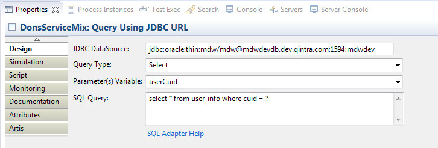

SQL Adapter Activity
The MDW JDBC SQL Adapter Activity provides the ability to query a database to select values and perform updates.
Design Attributes
The basic design parameters for configuring a SQL Adapter Activity are illustrated in the screenshot below.

The JDBC DataSource example in the screenshot shows how to specify a simple JDBC URL as your DataSource.
While this is acceptable for testing, in a real deployment you should use an actual DataSource that provides
database connection pooling, as described below in Configuring a DataSource using Spring.
Queries are executed using JDBC Prepared Statements, and the dynamic parameters used in the query are designated using the question mark syntax.
Values for bind variables are populated from a process variable with one of the following types:
- java.lang.String
- java.lang.Integer
- java.lang.Long
- java.util.Date
- java.lang.String[]
- java.lang.Integer[]
- java.lang.Long[]
- java.lang.Object (as long as its value is one of the supported types, or an Array of supported types)
- null (no parameters)
If no parameter variable is set, this behaves the same as if the variable value is null (no dynamic parameters).
When the Query Type is "Select", the JDBC ResultSet is made available as the implicit "response" variable in the adapter Post-Script.
Here's an example Groovy script that updates a UserDocument variable based on the ResultSet from the user selection query above:
import java.sql.ResultSet
import com.centurylink.mdw.user.UserDocument
import com.centurylink.mdw.user.UserDocument.User
ResultSet rs = (ResultSet) response;
if (rs.next()) {
userDocument = UserDocument.Factory.newInstance();
User user = userDocument.addNewUser();
user.setCuid(rs.getString("cuid"));
String name = rs.getString("name");
String[] names = name.split(" ");
user.setFirstName(names[0]);
user.setLastName(names[1]);
}
If the Query Type is "Update", then the response is a java.lang.Integer indicating the number of rows updated.
The following Spring Beans snippet illustrates how you can declare a JDBC pooled DataSource for ServiceMix in your bundle-context file.
<beans xmlns="http://www.springframework.org/schema/beans"
xmlns:xsi="http://www.w3.org/2001/XMLSchema-instance"
xmlns:osgi="http://www.springframework.org/schema/osgi"
xmlns:osgix="http://www.springframework.org/schema/osgi-compendium"
xmlns:jaxws="http://cxf.apache.org/jaxws"
xmlns:cxf="http://camel.apache.org/schema/cxf"
xmlns:ctx="http://www.springframework.org/schema/context"
xmlns:mdw="http://mdw.centurylink.com/service"
xsi:schemaLocation="http://www.springframework.org/schema/beans http://www.springframework.org/schema/beans/spring-beans.xsd
http://www.springframework.org/schema/osgi http://www.springframework.org/schema/osgi/spring-osgi.xsd
http://www.springframework.org/schema/osgi-compendium http://www.springframework.org/schema/osgi-compendium/spring-osgi-compendium.xsd
http://www.springframework.org/schema/context http://www.springframework.org/schema/context/spring-context.xsd
http://cxf.apache.org/jaxws http://cxf.apache.org/schemas/jaxws.xsd">
<osgix:cm-properties id="donsProps" persistent-id="com.centurylink.dons" />
<ctx:property-placeholder properties-ref="donsProps" />
<bean id="donsDataSource"
class="org.apache.commons.dbcp.BasicDataSource"
destroy-method="close">
<property name="driverClassName" value="${dons.database.driver}" />
<property name="url" value="${dons.database.url}" />
<property name="username" value="${dons.database.username}" />
<property name="password" value="${dons.database.password}" />
<property name="maxActive" value="${dons.database.poolsize}" />
<property name="maxIdle" value="${dons.database.poolMaxIdle}"/>
<property name="validationQuery" value="SELECT 1 FROM DUAL" />
<property name="testOnBorrow" value="true" />
<property name="testWhileIdle" value="true" />
<property name="removeAbandoned" value="true"/>
<property name="logAbandoned" value="true"/>
<property name="removeAbandonedTimeout" value="600"/>
</bean>
<osgi:service id="donsOsgiDataSource" ref="donsDataSource">
<osgi:interfaces>
<value>javax.sql.DataSource</value>
</osgi:interfaces>
<osgi:service-properties>
<entry key="name" value="DonsDataSource"/>
</osgi:service-properties>
</osgi:service>
<!-- export our DataSource through JMX -->
<bean id="exporter" class="org.springframework.jmx.export.MBeanExporter" lazy-init="false">
<property name="beans">
<map>
<entry key="com.centurylink.mdw:name=donsDataSource" value-ref="donsDataSource"/>
</map>
</property>
<property name="registrationBehaviorName" value="REGISTRATION_REPLACE_EXISTING"/>
</bean>
...
</beans>
The cm-properties and property-placeholder elements allow you to externalize your connection pool sizing parameters so that they can be changed without a redeployment.
In this example the property values are located in the file "com.centurylink.dons.cfg" in the ServiceMix instance's etc directory, which is automatically scanned by the OSGi container.
In a development environment, typical values for these properties might be as follows:
##### database parameters.
dons.database.driver=oracle.jdbc.driver.OracleDriver
dons.database.url=jdbc:oracle:thin:@mdwdevdb.dev.qintra.com:1594:mdwdev
dons.database.username=mdw
dons.database.password=mdw
dons.database.poolsize=5
dons.database.poolMaxIdle=3
The DataSource bean uses the same Apache DBCP connection pooling that the MDWFramework uses.
In order for your bundle to use DBCP, some extra imports and dependencies are needed in your pom.xml build file:
<Import-Package>
javax.sql,
org.apache.commons.dbcp;version="[1.2.2.osgi,1.2.3)",
...
<dependency>
<groupId>org.apache.commons</groupId>
<artifactId>com.springsource.org.apache.commons.dbcp</artifactId>
<version>1.2.2</version>
</dependency>
The DataSource is exposed as an OSGi service in your bundle-context.xml file so that MDW can locate it according to its logical name.
This is specified in the <service-properties> "name" entry, and must be matched exactly by the "JDBC DataSource" attribute specified on the Design tab for your SQL Adapter in MDW Designer.